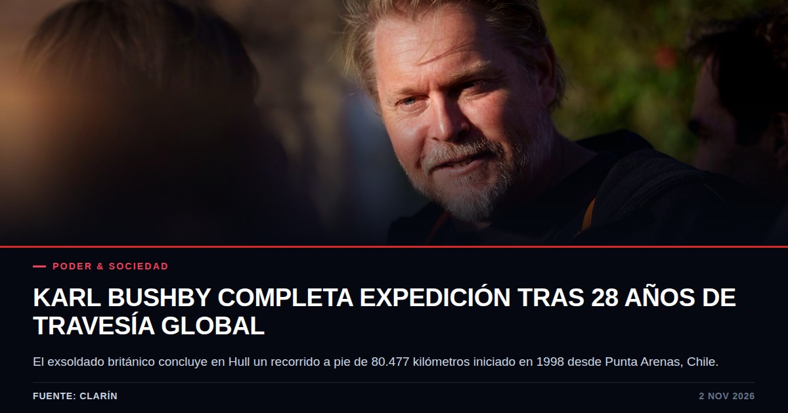
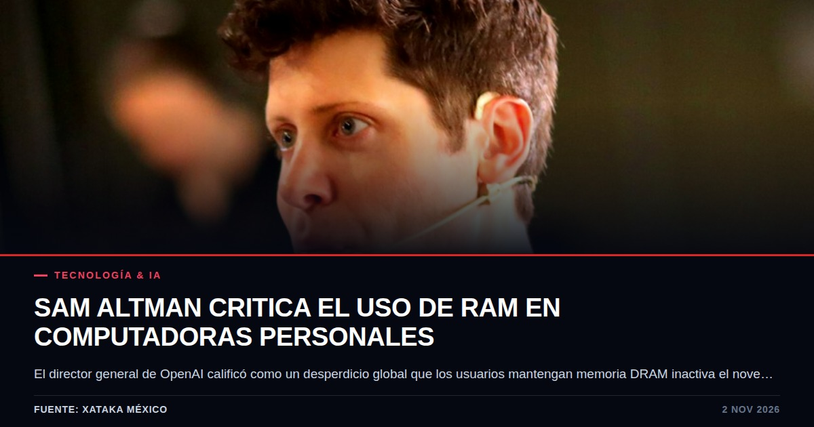

Karl Bushby concluye en Gran Bretaña una caminata global de 28 años
El exsoldado británico completó 80.477 kilómetros tras partir de Chile en 1998. La travesía expone la rigidez de los controles fronterizos continentales.

Datos clave
- Distancia total recorrida: 80.477 kilómetros en 10.229 días a lo largo de 28 años.
- Punto de partida: Punta Arenas, Chile, en 1998, con un presupuesto inicial de 500 libras esterlinas.
- Pasos críticos cruzados: Tapón del Darién, estrecho de Bering a nado y caminata, y canal de la Mancha a nado en octubre.
- Llegada a Hull: Recibido en Queen Victoria's Square por la alcaldesa Maria Coward y el regimiento Paras.
Qué pasó
Según reportó Clarín, Karl Bushby llegó a la plaza Queen Victoria de Hull, en el Reino Unido, donde fue recibido por cientos de vecinos, representantes de su antiguo regimiento de paracaidistas y autoridades locales. El exsoldado concluyó así una caminata alrededor del mundo que comenzó en 1998 y abarcó 80.477 kilómetros.
Cargando sus pertenencias en un carro fabricado por él mismo y denominado 'The Beast', Bushby fue recibido por la alcaldesa de la ciudad, Maria Coward, y por el diputado Karl Turner, quien transmitió palabras del primer ministro británico felicitando la culminación del recorrido. La llegada marcó el cierre de una travesía de 10.229 días.
El contexto
Bushby inició su trayecto a los 28 años en Punta Arenas, Chile, cruzando hacia Argentina en 1999 con un fondo de 500 libras esterlinas. A lo largo de casi tres décadas, el británico atravesó cuatro continentes enfrentando condiciones extremas y obstáculos geográficos de alta peligrosidad.
De acuerdo con coberturas de El Mundo y Chicago Tribune, la ruta incluyó la travesía del Tapón del Darién entre América del Sur y Central, el cruce a nado del mar helado en el estrecho de Bering entre Alaska y Rusia, y finalmente el cruce a nado del canal de la Mancha a principios de octubre para ingresar a territorio insular británico.
El punto ciego
Más allá de la narrativa heroica promovida por las autoridades en Hull, el desarrollo de la expedición de Bushby funcionó como un diagnóstico en tiempo real sobre la evolución de la seguridad fronteriza global. En los 28 años que duró su trayecto, el mapa internacional se reconfiguró mediante el endurecimiento de visados, el blindaje de pasos terrestres y el incremento de controles biométricos.
El hecho de que un ciudadano requiera sortear bloqueos burocráticos severos para cruzar por vía terrestre fronteras continentales demuestra cómo las normativas migratorias han eliminado progresivamente los márgenes para tránsitos no estandarizados. Lo que en el siglo XX era visto como exploración geográfica, en el siglo XXI enfrenta la sospecha institucional y la parálisis regulatoria.
Quién gana y quién pierde
En el plano político institucional, los gobiernos locales y representantes parlamentarios capitalizan el suceso para reforzar narrativas de identidad nacional y resiliencia comunitaria. La recepción oficial en Hull funcionó como un acto de diplomacia pública y cohesión social.
Por otro lado, el costo personal asumido por el protagonista recae en el ámbito familiar y social: Bushby regresa a la casa materna tras décadas alejado de su entorno, habiendo permanecido al margen del crecimiento de su hijo de 36 años y sin haber conocido previamente a su nieta de 12 años, además de enfrentar la reincorporación al mercado laboral formal tras casi tres décadas de desconexión.
Qué vigilar
Resulta relevante dar seguimiento al proceso de reinserción civil y económica de Bushby en el Reino Unido, así como a la documentación de sus registros de travesía frente a organismos internacionales. Asimismo, cabe observar cómo el endurecimiento de las políticas de soberanía territorial en zonas estratégicas como Bering y el Darién continúa reduciendo la viabilidad de expediciones terrestres intercontinentales independientes.
Fuentes consultadas
- Clarín: La increíble historia de Karl Bushby: regresó a su casa después de caminar 28 años por todo el mundo
- Clarin.com: La increíble historia de Karl Bushby: regresó a su casa después de caminar 28 años por todo el mundo
- Chicago Tribune: En 28 años caminando, Karl Bushby superó selva, desierto y burocracia. Está a punto de llegar a casa
- El Mundo: Karl Bushby regresa a casa tras una vuelta al mundo caminando de 28 años, cuatro continentes y 50.000 kilómetros
- UDG TV: Aventurero británico completa la vuelta al mundo a pie tras 28 años
Te puede interesar

La crisis de la vivienda en Portugal desata una tormenta política tras la represión policial
La intervención contra acampadas pacíficas este fin de semana ha dejado decenas de heridos, avivando el descontento en el país de la Unión Europea donde más se ha encarecido la vivienda.

El dilema de la memoria RAM y la centralización del poder de cómputo según OpenAI
Sam Altman cuestiona la eficiencia de mantener memoria DRAM inactiva en equipos personales frente a la escasez global. Detrás de los argumentos de optimización se vislumbra la defensa del modelo de negocio en la nube.
Los futuros de Wall Street repuntan tras un octubre bajista entre la pausa de la inteligencia artificial y la caída del petróleo
El mercado accionario estadounidense registra un respiro tras el cierre negativo de octubre, impulsado por una contracción en los precios del crudo y la expectativa ante las elecciones de mitad de mandato.